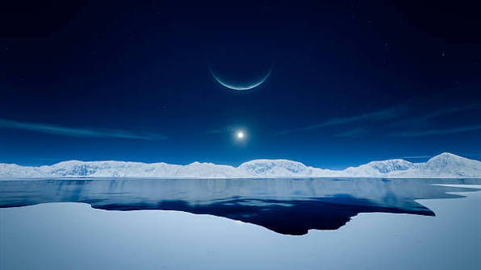
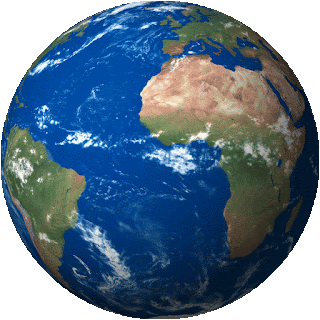

A Antártida (ou Antártica) é o continente mais meridional da Terra, localizado no Polo Sul geográfico. É uma vasta região de extremos, fundamental para o equilíbrio ambiental e climático do planeta.

Diferentemente dos demais continentes, a Antártida, ou Antártica,
não possui divisão por países e nem população fixa.
Seus habitantes,
que são pesquisadores alocados em bases científicas,
variam entre 1.000 no inverno e 5.000 no verão.
Porém ainda há bastante curiosidades sobre a Antártica, além de ser um centro de pesquisas que cuidam e observa o planeta também temos!
